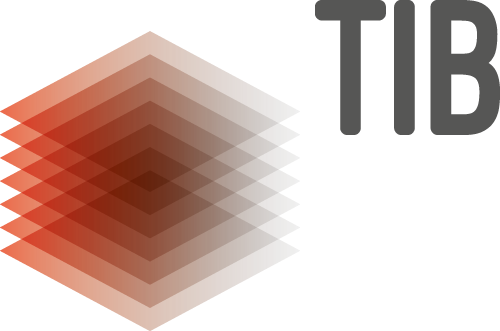
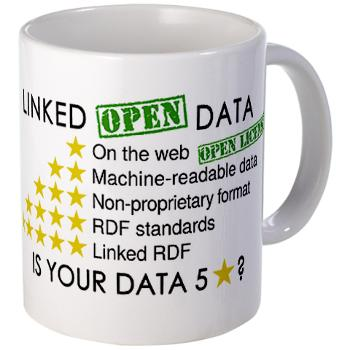
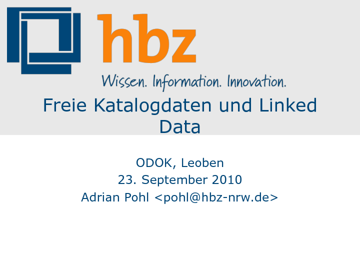
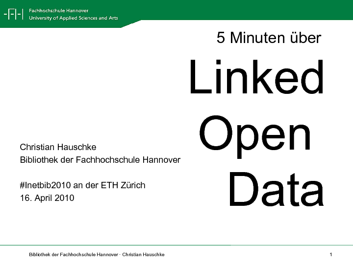
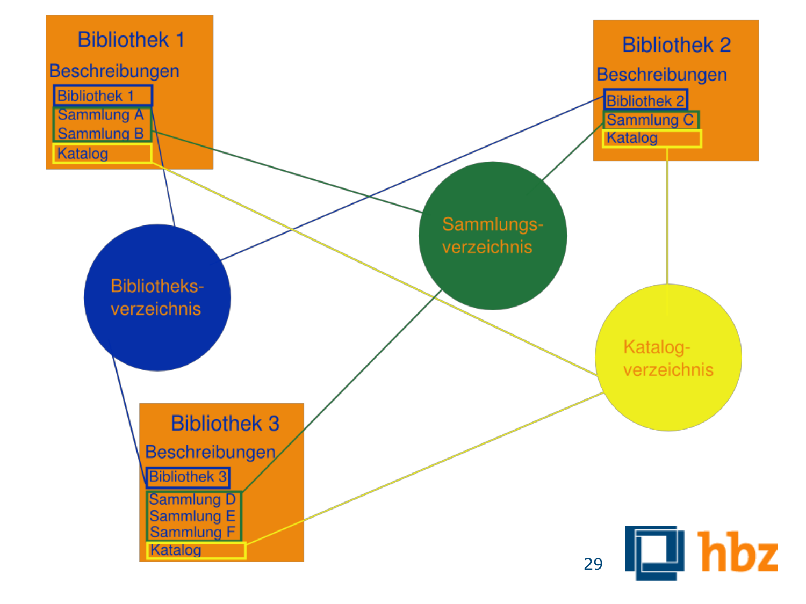

Adrian Pohl / @acka47, hbz
Christian Hauschke / @hauschke, TIB

Diese Präsentation:
http://slides.lobid.org/inetbib-odok-2018
LOD ist eine Sammlung von Konventionen zur Publikation und Verknüpfung von Daten im Web
Basierend auf offenen Lizenzen und Web-Standards:
Uniform Resource Identifier (URI),
Hypertext Transfer Protocol (HTTP),
Resource Description Framework (RDF)



Alles ist besser als Web-OPACs (=Datenbanken im Deep Web)
Google et al nutzen nicht beliebiges RDF
-> schema.org
Ob bzw. inwiefern schema.org-Markup Nutzen bringt (mehr Indexierung, besseres Ranking) ist auch heute noch unklar
Alles ist besser als Web-OPACs (=Datenbanken im Deep Web)
Google et al nutzen nicht beliebiges RDF
-> schema.org
Ob bzw. inwiefern schema.org-Markup Nutzen bringt (mehr Indexierung, besseres Ranking) ist auch heute noch unklar
Größere Sichtbarkeit und Auffindbarkeit im Web
Vernetzung mit und Anreicherung durch externe Datensets
Mehr Interoperabilität durch domänenübergreifende Standards
Einfache Wiederverwendung
Einfache Erweiterbarkeit der Daten und des Datenmodells
Unterstützung multilingualer Daten
Begrenzte Aufnahme von LOD, weil RDF, SPARQL, OWL zu akademisch
Zur Auffindbarkeit
Interoperabilität mit anderen Domänen? Ja, aber
Einfache Wiederverwendung? Ja, aber
Einfache Erweiterbarkeit der Daten und des Datenmodells? Ja
Unterstützung multilingualer Daten? Ja
Größere Sichtbarkeit und Auffindbarkeit im Web? Ja, aber
Vernetzung mit und Anreicherung durch externe Datensets? Ja, aber
Interoperabilität mit anderen Domänen? Ja, aber
Einfache Wiederverwendung? Ja, aber
Einfache Erweiterbarkeit der Daten und des Datenmodells? Ja
Unterstützung multilingualer Daten? Ja

Größere Sichtbarkeit und Auffindbarkeit im Web
Mehr Interoperabilität durch domänenübergreifende Standards
Einfache Erweiterbarkeit der Daten und des Datenmodells
Unterstützung multilingualer Daten
Nachnutzbarkeit optimieren